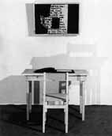
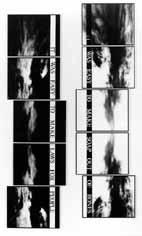
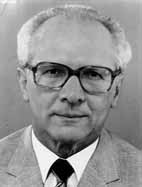
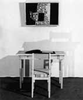
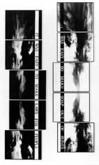
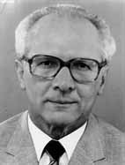

Galerie Anselm Dreher / Jochen
Gerz

Dachau-Projekt, 1974

It was easy # 3, 1988

"Erase/The Past", 1991
Galerie Anselm Dreher / Jochen Gerz

Dachau-Projekt, 1974

It was easy # 3, 1988

"Erase/The Past", 1991